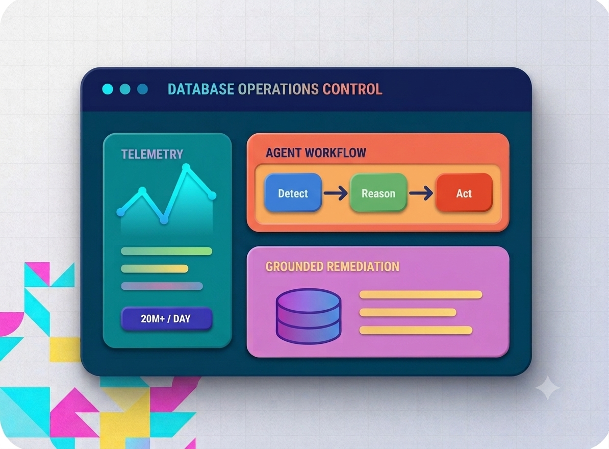

2026Agentic AI · Database Reliability
Autonomous Database Operations
Hewlett Packard Enterprise
Data Scientist Intern · Houston, TX
2025
Built a production intelligence layer that detects database growth and performance risks, retrieves operational knowledge, proposes remediation plans, and supports controlled corrective actions.
20M+logs processed daily
Agenticdiagnosis and remediation
RAGgrounded operational answers